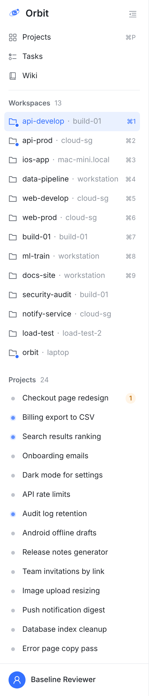
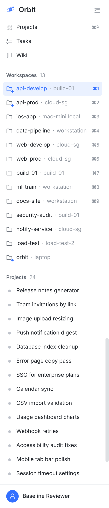
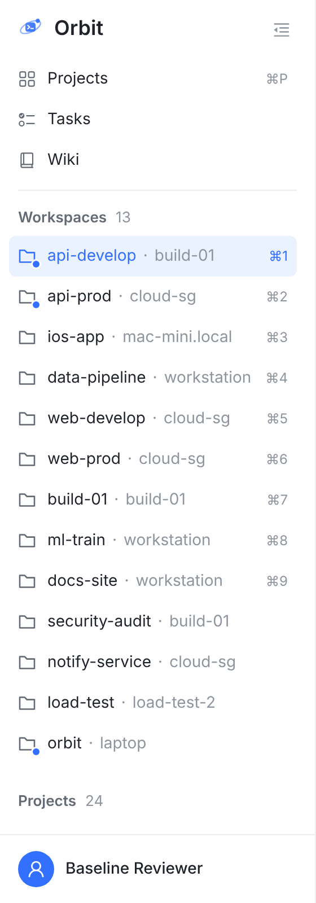
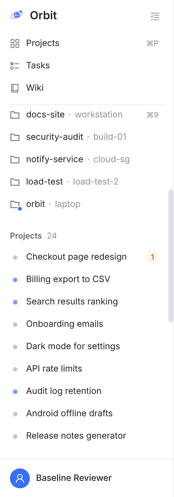
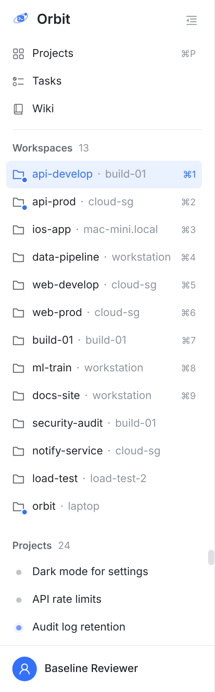
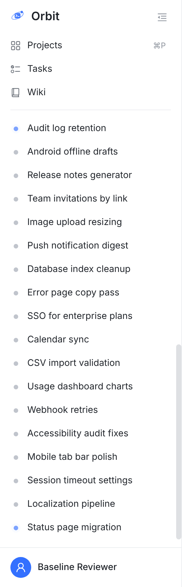
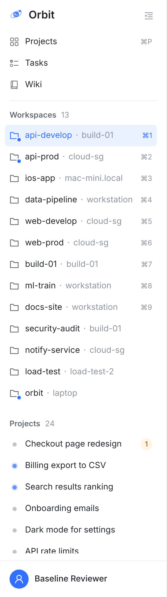
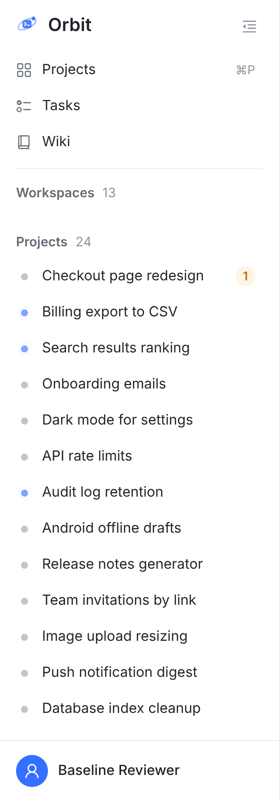
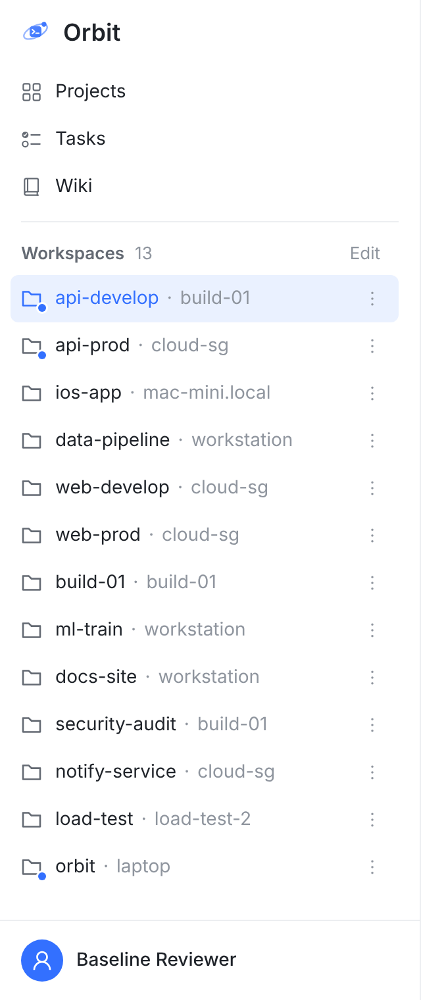

按你的规则做的原型。导航（Projects / Tasks / Wiki）始终固定。Workspaces 能全放下、而且下面还能给 Projects 留至少 5 行时，Workspaces 也固定，只滚 Projects；否则 Workspaces 和 Projects 作为一个整体滚。每张图都是真实 Web 控制台的截图（静态构建加假数据：今天 = main 91fde3cab，建议 = 同一棵树打上 prototype-2.patch）；13 个 Workspace、24 个项目，名字是示例；红色虚线和数字是标注。上一版（两组各一半）是同一目录的 board-1…4.png。
11-01 已定 拍板 1 选照字面：Workspaces 和 Projects 组头放得下，就只滚 Projects（13 个 Workspace 时窗口 799 高起），不另给 Projects 留行；拍板 2 选导航固定。已按此实现；下面的图和 prototype-2.patch 是拍板前的原型（留 5 行）。




只看 Workspaces 放不放得下，会出现 Workspaces 刚好放下、Projects 只剩一条缝的情况。所以「放得下」= Workspaces 全放下后，Projects 还能露至少 5 行（项目不到 5 个就按实际行数）。13 个 Workspace 时，分界线是窗口 980 高。





| 情况 | 怎么滚 |
|---|---|
| Workspaces 全放下，Projects 还能露 ≥ 5 行 | Workspaces 和导航不动，只滚 Projects（组头停在框顶） |
| 否则 | Workspaces + Projects 一起滚，导航不动 |
| 折叠 Workspaces | 只剩组头，总是放得下：只滚 Projects |
| 折叠 Projects | Workspaces 放得下就都不滚，放不下就照样一起滚 |
| 窗口拉高拉低、增删 Workspace | 跨过分界线就换滚法，列表回到顶部 |
| 不变的 | 账户行固定；组头可折叠；排序、⌘1–⌘9、Edit 拖动排序照旧；收起成 56 px 图标栏时照旧 |
只滚 Projects 时，框里至少 5 行：等你的那几个（排最前）一定看得见。
更多窗口高度下就固定住 Workspaces。
Projects 框最矮 3 行，滚起来有点挤。
13 寸（800 高）上就只滚 Projects，框里一行都没有；900 高 2.8 行（③ 的 1）。
Projects / Tasks / Wiki 永远点得到；两种滚法下导航都在原地，切换时不跳。
一起滚时列表少 125 px 高。
一起滚时列表多 125 px。
导航在「只滚 Projects」时固定、「一起滚」时滚走，两种滚法不一致。
index.css：.tp-scroll 改成不滚的竖列（导航固定）；新的 .tp-lists 是一起滚的框；加上 .pin-workspaces 时，Workspaces 固定、Projects 框自己滚（组头吸顶）；三块的滚动条槽位常驻，⌘P 和 ⌘1 对齐、换滚法时行不跳。TasksSidePanel.tsx：两组外面包一层 .tp-lists，两个 className，一段 useLayoutEffect 用 ResizeObserver 量放不放得下（量在绘制前，不闪；没有 ResizeObserver 的环境照旧一起滚）。就是下面的 prototype-2.patch，① 到 ④ 的图都是它；原型树上 tsc 通过，侧栏 9 个测试文件加 indexCss、firstPageStylesheet 都过（122 条）。要补：把「放不放得下」抽成纯函数加单测；Playwright 在 800 / 1000 / 1300 高各验一次滚法；Safari 和 Firefox 各看一眼。截图：真实 Web 控制台（vite 静态构建加假数据），侧栏用默认宽 280 px（你截图里是 480，规则一样），Chromium 打开真实滚动条（8 px 槽位）。1440×800 ≈ 13 寸笔记本的浏览器窗口，1440×1300 ≈ 外接显示器，390×760 ≈ 手机。今天 = main 91fde3cab；建议 = 同一棵树打上 prototype-2.patch；③ 的「照字面」是在它上面叠几行 CSS、强制「只滚 Projects」，只为截图。包裹层里两组没有重新缩进，补丁才短。重截：capture/。